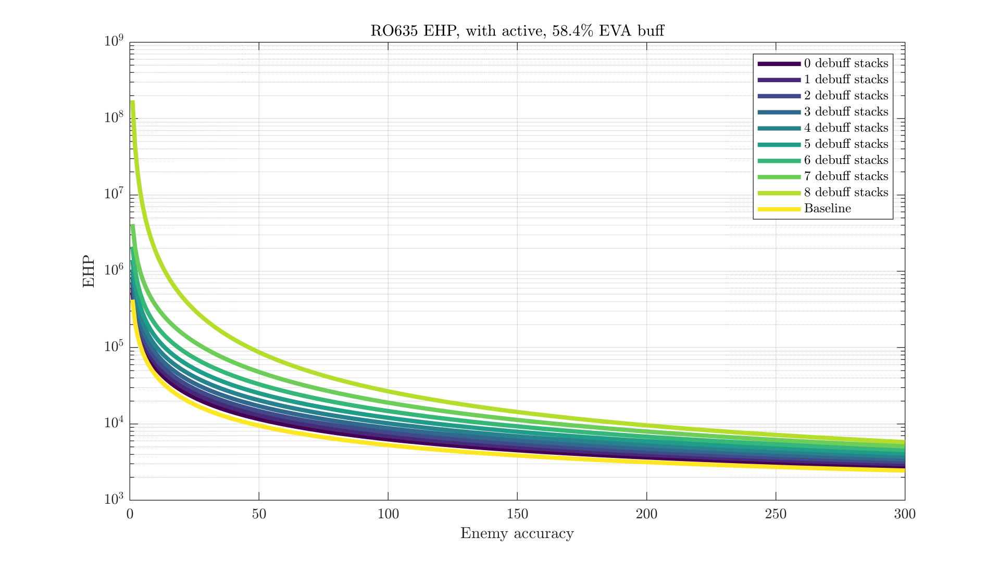
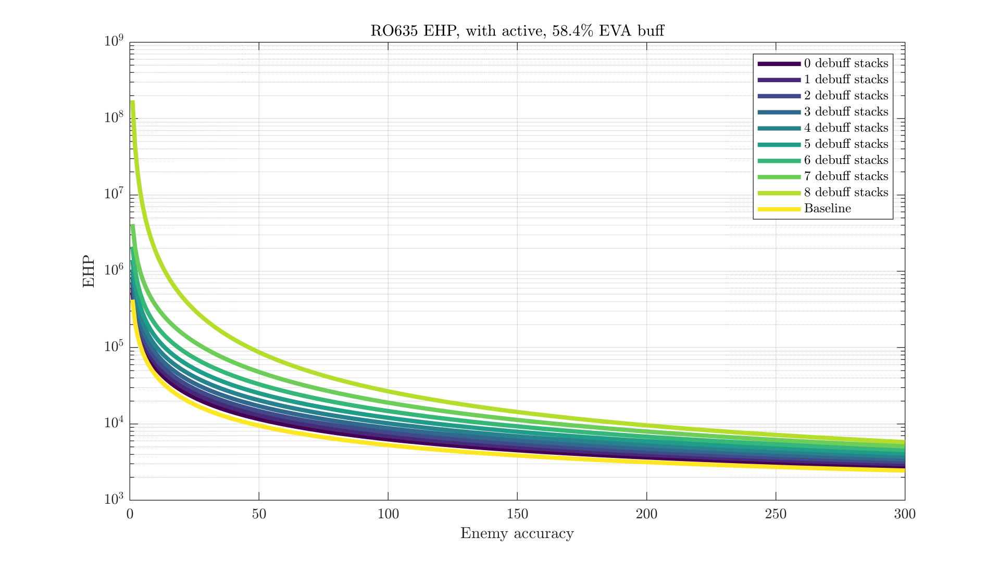

RO635's Second Chance
RO635 will be getting a mod with the release of Dual Randomness on the 25th, and her second skill is quite interesting:
Righteous Judgment ICD 0s/CD 0s
Whenever taking damage that is below the maximum HP of a single Dummy, there is a 20% chance of gaining an additional evasion check against that instance of damage. A successful evasion check negates that instance of damage. Every stack of damage/accuracy/rate of fire/move speed reduction or Seal of the Avenger present on the attacker increases the chance of gaining the additional evasion check by 10%. When Mental Deterrence is active, self attacks apply Seal of the Avenger to targets.
A few corrections/technical notes: while not mentioned in the original translation, ROF debuffs contribute to her passive. Multiple stacks of the same debuff improve its activation chance. The +10%/stack is additive, not multiplicative. Her skill is sometimes claimed to be a flat chance to ignore incoming damage - this is not the case (as you may have guessed, I lifted all these findings from Randomqwerty).
So: RO635 has a passive chance to negate any incoming damage she would have taken, including surehit attacks. The dummy HP restriction isn't too bad, as she has 208 HP/link and reduces enemy damage with her active - not much outside of Dreamer and Destroyer hit for more than that.
While the text itself is fairly straightforward (setting aside the omissions), making sense of what this actually does for you is less trivial. Battle conditions tend to be rather dynamic, so there's no single value we can assign to this ability. Let's do a little math, run through a few generic-ish cases, and get a feel for how much this does. Surehit attacks are on the rare side, so we'll largely set consideration of those aside and instead look at how much it improves Ro's normal tanking abilities.
Contents#
Dodge Chance#
Before getting into things, make sure you've read up on how evasion works and what EHP is. I'll be pulling a few concepts from there and assume you're familiar with them going forward.
To start, let's incorporate her passive to get Ro's real chance to dodge an attack. The general idea:
$$ \text{P(actually dodges)} = \text{P(normally dodges)} + \text{P(would get hit)} \cdot \text{P(passive triggers)} \cdot \text{P(extra eva check works)}$$With \(D\) debuffs on the enemy, this expands to:
$$ \text{P(actually dodges)} = \frac{\text{EVA}}{\text{EVA}+\text{ACC}} + \frac{\text{ACC}}{\text{EVA}+\text{ACC}} \cdot \mathrm{min}(0.2+0.1\text{D},1) \cdot \frac{\text{EVA}}{\text{EVA}+\text{ACC}}$$If we're willing to not intentionally plug in bad values of \(D\) (such that it'd go above 100%), this can be compacted to
$$ \text{P(actually dodges)} = \frac{\text{EVA}(\text{ACC}(0.1\text{D}+1.2)+\text{EVA})}{(\text{ACC}+\text{EVA})^2} $$Too long to plug into your calculator? Feel free to borrow mine:
| Ro's EVA | Enemy ACC | Debuff stacks |
|---|---|---|
| Base dodge chance | Final dodge chance | Effective HP | EHP increase from passive |
|---|---|---|---|
| ?% | ?% | ? EHP | ?% |
(Find enemy stats on GFLMaps.)
Against surehit enemies, the initial dodge has probability 0% and enemies would initially hit her 100% of the time, so the formula is much simpler:
$$ \text{P(actually dodges)} = \text{P(passive triggers)} \cdot \text{P(extra eva check works)}$$ $$ \text{P(actually dodges)} = \mathrm{min}(0.2+0.1D,1) \cdot \frac{\text{EVA}}{\text{EVA}+\text{ACC}}$$I think you can work that one out for yourself. She won't dodge all that many of these unless you're stacking lots of debuffs.
Visualizations#
Math and equations can be fun, but they don't always give us a very intuitive sense of how this works out in typical situations. Let's start off simple, plotting Ro's dodge chance given a fixed amount of evasion on her end, variable enemy accuracy, and any number of debuffs:
If a 58.4% EVA buff sounds weird, I'm using a 32% aura (Para/Command) and a 20% tile (HS2000/Grizzly/HP-35, many AR tiles are similar) to get that number. Exact values will vary by team. Her active skill increases her evasion and decreases enemy accuracy - with those affects pre-applied (on top of that 58% buff), see the following chart.
"Baseline" is without her passive applied at all. Keep in mind that Ro's skill applies two debuffs to enemies plus possible Seals. The in-skill lines with 0 or 1 stacks are only kept in for visual consistency with the first plot.
But dodge chance isn't always what really matters. Let's chart her effective HP under the same conditions.
 

Note that these charts don't take her 25% damage reduction effect into account. While her skill is active, that will naturally also increase her EHP.
EHP grows a lot with low enemy accuracy, so this uses a logarithmic y-axis. Not too useful, is it? We can see it grows with more debuff stacks and shrinks as enemy acc grows, but that much was already obvious. Here's something better (in my opinion) - the percentage increase in EHP Ro's passive skill provides.
We can read values much better off this. With no debuffs applied, her passive is never more than a 25% increase in EHP. With three, it's never less than a 25% increase (and often more than a 50% boost).
As Ro's evasion grows, her passive becomes more valuable. It still takes some significant debuff stacking to go above a 100% EHP increase, but it's clearly doing a lot.
By Comparison#
Knowing how Ro does relative to herself can be useful, but it doesn't help us much if we want to know if it's time to replace Suomi (hint: it's long overdue). Let's take that EHP increase chart, add her pre-passive line back in for reference, and get some ballpark comparisons to other dodgy SMGs.
When non-CMS skills are off, Ro's passive is clearly amazing. Even C-MS falls behind once Ro gets a second debuff stack, or even with just one against particularly accurate enemies.
With active skills applied, only MP7 and Suomi can somewhat keep up with Ro's base form. While MP7 and Suomi are a bit lower for in-skill EHP and lack a passive, they do have significantly better uptime (5/8 vs 5/12), so this still isn't a 1:1 comparison.
Ro applies two debuffs with her skill for free, so there's little need to mind her first few lines. UMP45 may look terrible here, but keep in mind that she's not made to be an EVA buffer. The hope with her is that excellent tiles and an initial slow effect let you finish off the enemies before you even get to making EVA checks.
Keep in mind that skill uptime variations and changes in incoming damage over time make any theoretical chart like this at least somewhat wrong. But one thing is clear - Ro mod is much better than any previous evasive SMG at tanking, almost regardless of the circumstances.
Conclusion#
This isn't exactly a full review or evaluation of Ro's mod - there's plenty of aspects not covered here. If that's what you want, you can rest assured that she's very strong and worth upgrading at least to mod2.
If you want to see how worthwhile her mod3 SPEQ is, try adding and removing it from the calculator above. Just be sure to calculate its additive bonus before multiplicative tile/skill/aura buffs. I'd usually expect it to give ~5% more EHP.
To get a sense of how many debuff stacks you're applying, I'd recommend recording a battle or two and carefully tracking skills through the battle. This will vary by enough by team/enemy for it to be hard to give a general range. Alternatively, if you're willing to test, just see if Ro tanks well enough for your performance requirements and make adjustments to the echelon accordingly.
Extra: Surehit attacks#
Ro's modskill works out to be a very nice EHP boost against normal attacks. That's great, but you're probably still interested in what makes it unique - the ability to negate surehit damage. To help maintain your wonder at this feature, please temporarily keep your mind free from any thoughts relating to the existence of HP shields, force shields, kiting, the Taunt dummy, and retreating.
First, her actual dodge chance by stack count and enemy accuracy:
And the EHP gain from her passive:
Still a respectable boost percentage-wise, but keep in mind your starting EHP is much worse. Ro's performance vs surehit attacks is strictly equal or worse than her performance against a non-surehit with the same accuracy stat, without her mod skill. In most cases, you're still getting hit at least half the time. The lines for other SMGs are flat as their EHP is just their regular HP - enemy accuracy is no longer a factor.
And as this is something you're less likely to pay attention to, here's a few arbitrary accuracy stats of common surehit enemies:
| Enemy | ACC |
|---|---|
| Core 8 Doppelsoldner | 44-47 |
| Core 8 SWAP Jaeger | 179-189 |
| Core 8 Uhlan | 124-126 |
| Core 8 Jaguar | 356-357 |
| Core 8 Minotaurus | 47 |
| Singularity ranking Typhons | 408 |
More like this
Compared to Uzi & Vector
Scope pairs, DPS comparison